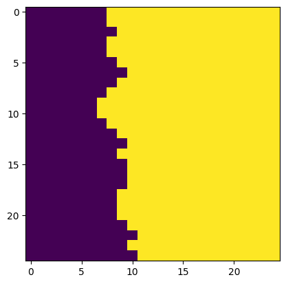
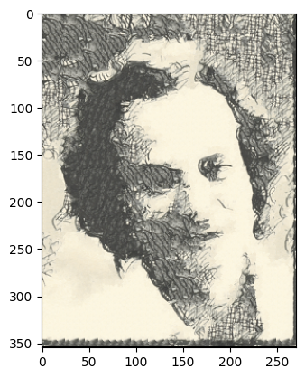

In this project, we implement the "image quilting" and "texture transfer" algorithms described in "Image Quilting for Texture Synthesis and Transfer" (Efros, Freeman).
Texture synthesis is the creation of a similar but different version of a "texture image", or an image with repeated patterns. We begin with a highly naive approach to texture synthesis: we fill the patches of an output image by repeatedly sampling random patches from an input image.

Input (from the paper)
Random sampling output (patch_size=15)
The resulting output is poor because it is clearly "blocky". Note that the output (300x300) is larger than the input (192x192).
A better approach to texture synthesis is to overlap the output patches and fill them in raster-scan order. To fill an output patch, we compute how well each input patch overlaps with the already-filled portion of the output patch. (This is measured as the SSD (sum of square differences) between the already-filled portion of the output patch and the corresponding portion of the input patch.) We set tol=5; in other words, one of the five best input patches is chosen at random to fill the output patch.

Overlapping patches output (patch_size=25, overlap=11, tol=5)
The official image quilting algorithm eliminates "blocky" results by establishing curved boundaries between output patches. Once we have chosen an input patch to fill an output patch, we compute a curved cut along the output patch's overlapping portion. In particular, we compute the cut that minimizes the difference between existing pixels and new pixels along the path of the cut. (To do this, we compute the optimal horizontal and vertical cuts separately and combine them.)

Image quilting output (patch_size=25, overlap=11, tol=5)
We display the seam-finding process for a single output patch below.

Existing pixels in output patch.
The chosen input patch.

Squared error between existing pixels and input patch.
Optimal horizontal cut.
Optimal vertical cut.
Combined cut.
Input (my photo)

Image quilting output (patch_size=25, overlap=11, tol=5)

Input (my photo)
Image quilting output (patch_size=25, overlap=11, tol=5)
We can repurpose the image quilting algorithm to perform "texture transfer". During texture transfer, we reconstruct a guidance image by sampling patches from a different image, which we call the texture image.
To produce an output that resembles the guidance image, we introduce a "correspondence cost". For any output patch and candidate input patch, the correspondence cost of choosing the input patch is the SSD between the input patch and the patch in the guidance image that is being reconstructed. (Before computing SSD, we apply several transformations to the texture and guidance images: smoothing the images, converting the images to grayscale, and normalizing pixel values.)
The overall cost of selecting an input patch is the weighted average alpha * overlap_cost + (1-alpha) * correspondence_cost for some weight alpha. Note that overlap_cost is the existing cost that is computed from patch overlap. Once the overall cost of each input patch is known, we randomly select an input patch according to tol and proceed with seam-finding.
Texture input (from the paper)

Guidance input (from the paper)
Texture transfer output (patch_size=11, overlap=4, tol=3, alpha=0.5)
Texture input (from wallpapers.com)

Guidance input (my photo)
Texture transfer output (patch_size=11, overlap=4, tol=3, alpha=0.5)
We improve texture transfer by turning it into an iterative process: we perform several raster scans with decreasing values of patch_size and overlap, and increasing values of alpha. Starting from the second iteration, we compute "overlap cost" using the entire input patch and all existing pixels in the output patch.
Non-iterative output from before
Iterative output (patch_sizes=[67, 43, 27, 17, 11], overlaps=[32, 20, 12, 7, 4], tol=3, alphas=[0.1, 0.3, 0.5, 0.7, 0.9])
Non-iterative output from before
Iterative output (patch_sizes=[67, 43, 27, 17, 11], overlaps=[32, 20, 12, 7, 4], tol=3, alphas=[0.1, 0.3, 0.5, 0.7, 0.9])
In both examples of texture transfer, the iterative outputs fix minor issues in the non-iterative outputs. In the first example, the left half of the non-iterative output contains a region of highly-uniform, "rectangular" patches; the iterative output makes these patches less uniform. In the second example, the left half of the non-iterative output has a lot of colorful noise; the iterative output somewhat dims the noise.